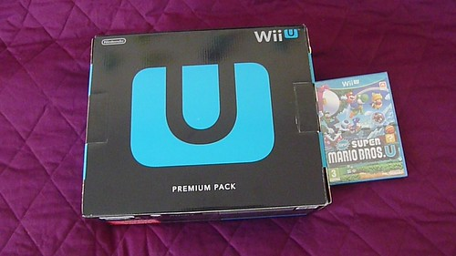
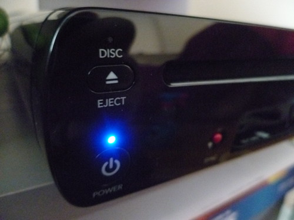
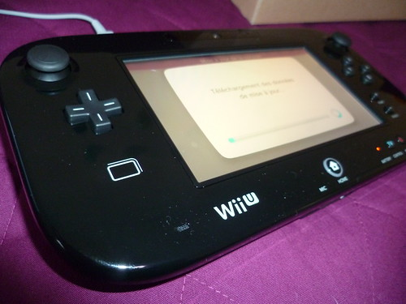
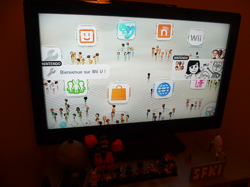
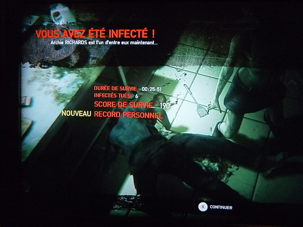

13 janvier 2013
Bien Wii U quoi ?

Aujourd'hui je test pour vous la nouvelle console de Nintendo, la Wii U ! Comme il existe déjà beaucoup de tests je donnerais mes impressions et quelques petits détails qui ont attirés mon attention.Tout d'abord le prix, la console est chère en effet et les packs proposés un peu radin... le premier "Basic Pack" contient la console en blanc avec le gamepad et c'est à peu près tout. Le second "Premium Pack" (celui que j'ai choisi) contient la console cette fois ci en noire, le gamepad mais aussi les accessoires comme les supports du Gamepad (un socle pour charger un autre pour le poser pendant les jeux), la sensor bar pour les Wiimote, ainsi que des pieds pour mettre la console à la verticale (ainsi plus de chance de la faire tomber !) et pour finir le jeu Nintendo Land. Le dernier pack "Zombi U" contient évidemment le jeu mais aussi un Controller Pro supplémentaire (Wii U noire). Concrètement, le premier pack (Basic) s'adresse à ceux qui possède déjà la première Wii et qui comptent réutiliser leur jeux et accessoires. Ayant vendue la mienne en 2008, j'ai opté pour le Premium Pack mais pour le prix je regrette qu'il n'y ai pas de Wiimote incluse. La console en elle même : Enfin de la HD ! Nintendo découvre enfin le monde de la haute-définition et propose une connectique HDMI, d'ailleurs seul ce câble est livré, pour ceux qui voudraient utiliser en péritel ou autre connectique dépassée et bah il faudra encore raquer ! ;) Sur la forme pas grand chose à redire, c'est comme la Wii, on a des ports USB (2 en façade, 2 à l'arrière), bouton sync, lecteur de carte SD, prise pour la sensor bar, prise secteur (encore avec un gros adaptateur). Évidemment plus de rétro-compatibilité Game Cube... on notera aussi la disparition de la LED bleu à l'insertion du disque de jeu (bizarrement certains artwork de la Wii U sur des sites montrent une lumière). Cette LED bleu est en fait remplacé par une LED blanche «DISC», celle-ci restera allumé même si votre console est éteinte (génial !), vous aurez donc le réflexe d'appuyer sur Eject, ce qui provoquera le démarrage de la Wii U au lieu de juste éjecter en mode éteint (GÉNIAL !).
Le Gamepad ou encore la mablette (néologisme, contraction de tablette et de manette) est plutôt intéressant, côte technologique je dirais que c'est du lourd, gyroscopes, infrarouge, NFC, écran tactile, Wi-Fi. Le poids est surprenant on s’attend à plus lourd et la prise en main est vraiment bonne. Niveau forme ça rappelle vaguement la Game Gear de Sega :p Donc voila, deux écrans (TV+Gamepad) dont un tactile, cela ne vous rappelle rien ? Et oui Nintendo réutilise le concept de la Nintendo DS, ou l'interaction est de mise. Sur Nintendoland, le jeu tire parti du Gamepad, ou certaines actions se font sur la TV, d'autre sur le Gamepad. A l'inverse New Super Mario Bros U permet juste un "stream" la même image est diffusé sur la TV et le Gamepad ce qui permet, comme la publicité TV le suggère de libérer la télévision et d'aller jouer partout comme par exemple les toilettes ;) Ah d'ailleurs parlons de la batterie, ce gamepad est assez gourmand, passé 3h une petite LED vous avertira qu'il est temps de le recharger. Jouer avec le câble n'est pas trop un problème mais bon on aurais aimé une meilleure autonomie.
L'impression d'un produit non-fini. Et oui, au démarrage après une configuration complète (dont Internet) on a la bonne surprise (et encore j'étais au courant) d'une mise à jour particulièrement longue (plus d'une heure !). Celle-ci ajoute en effet toutes les fonctionnalités de la Wii U comme le Miiverse, YouTube, la gestion d'amis... Mais voila une heure, et pour ceux qui ont une connexion mauvaise je n'imagine pas. La ou c'est drôle, c'est que Nintendoland à aussi une mise à jour ! Et quelques jours après Nintendo à encore re-sorti une mise à jour ! C'est toujours assez long et pénible. D'ailleurs c'est un peu l'impression en naviguant dans le système de la Wii U, ce manque de réactivité lorsque l'on passe d'une application à une autre ou alors quand on démarre un jeu. Là où un smartphone aura déjà quitté l'application et démarré une autre en 2 secondes, la Wii U se traine et on se demande vraiment si on est en 2013. Côté interface et bah on retrouve le même principe que la 3DS à savoir le système d'icônes fortement inspiré des smartphones... le côté "chaîne" disparait et est remplacé par ces carrés. Avec son navigateur, son application YouTube et bientôt le Nintendo TVii, l'achat de cette console pourrait être justifiée à la place d'un téléviseur connecté. Nintendo à d'ailleurs intégré une télécommande infrarouge pour contrôler votre TV (allumage, changement de sources, volume, chaines...) c'est plutôt une bonne surprise et cela fonctionne bien si la marque de votre TV est référencée. On regrette par contre que Nintendo est enlevé la galerie photos (non disponible sur le mode Wii) et n'ai toujours rien intégré pour écouter de la musique, ni même de lecture de DVD/BluRay... et pourtant ce n'est pas comme si ce n'était pas possible du côté matériel. En effet le lecteur de la Wii U permet de lire un nouveau format de disque optique propriétaire à Nintendo qui étrangement repose sur la même technologie que le BluRay pour pouvoir stocker plus de données.
Côté jeu, Nintendoland livré avec le Pack Premium propose une foule de mini-jeux dans le genre Mario Party pour vous familiariser avec les fonctionnalités de la console et son gamepad. Pas de bowling ni de golf, mais des jeux ancrés dans les divers univers des jeux Nintendo. Vous pourrez donc incarner Link, Samus, Mario, Luigi etc. grâce à un costume porté par votre Mii. Chaque mini-jeux est bien introduit et on vous explique comment jouer. Certains jeux sont uniquement multijoueurs et donc il vous faudra des Wiimotes, un seul joueur jouera en classe VIP sur son gamepad tout neuf et les autres devront se contenter des télécommandes Wii et de l'écran de TV. Pour prolonger la durée de vie du jeu et l'expérience du joueur, vous pouvez collecter des pièces qui vous permettent de débloquer différents "jouets" et musiques disponible sur la place Nintendoland, et vous pouvez aussi rencontrer les joueurs et partager vos impressions sur le nouveau réseau social de Nintendo : Miiverse. «Ouais !» Parlons donc ce Miiverse... Nintendo à compris que les réseaux sociaux avaient de plus en plus d'impact et à décidé de créer son propre service. Pour le moment disponible uniquement sur Wii U, il compte s'étendre sur 3DS ainsi que sur smartphone.
Petit bonus, j'ai testé ZombiU, le jeu d'Ubisoft qui est sorti récemment en démo sur le Nintendo eShop (téléchargeable seulement de 23h à 3h merci les allemands). Que dire de ce jeu ? On pourrait croire à du réchauffé, à un énième jeu de zombie... et bien non ! Ici il va falloir réfléchir et ne pas gaspiller vos ressources pour rester en vie. Le jeu se joue donc avec le Gamepad, et c'est assez déroutant au début. En effet vous devez alterner entre les boutons pour avancer et combattre, le stylet pour interagir avec vos objets et le gyroscope pour analyser les éléments présent dans la pièce. La prise en main est donc lourde je dirais et on évolue assez lentement, avec une ambiance à vous glacer le sang et un fond sonore particulier. Tout au long de l'aventure vous récupérez différents objets et devez remplir les objectifs donné par un coéquipier en voix off. Contrairement à un Resident Evil, impossible de bourinner, il faut y aller vraiment doucement et ne pas hésiter à prendre du recul. Je pense que je vais continuer à jouer à la démo et si ça me botte plus j'achèterai peut être le jeu.
Commentaires 0
Aucun commentaire.